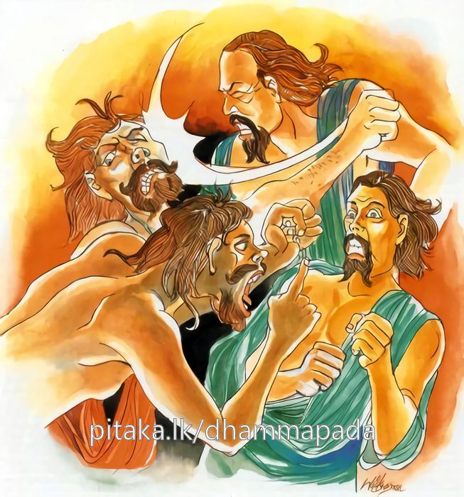
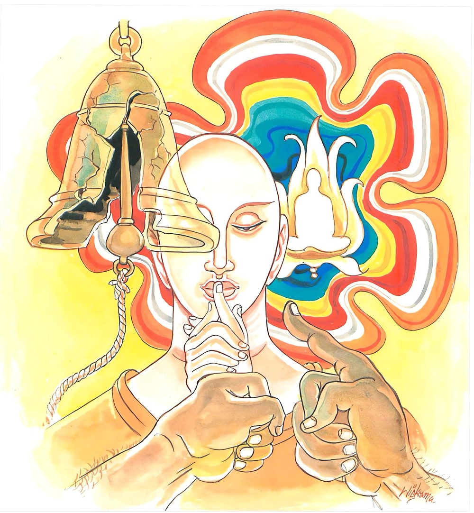

10-4 කුණ්ඩධාන තෙරුන්ගේ කතා පුවත.
මෙම කතාව සද්ධර්ම සාගරයෙන් ද කියවන්න.
මා’වොච ඵරුසං කඤ්චි වුත්තා පටිවදෙය්යු තං
දුක්ඛා හි සාරම්භකථා පටිදණ්ඩා ඵුසෙය්යු තං.
කිසි එක ද පුද්ගලයක්හට පරුෂ වචනයක් නහමක් කියව. තා විසින් පරොස් තෙපුල් කියන ලද්දාවූ අන්හු තට නැවැත පෙරළා පරොස් තෙපුල් බණන්නාහු ය. යම් හෙයකින් (කරණොත්තරකරණ යැ යි කියන ලද) යුගග්රාහ කථාව දුක් ද (හෙවත් දුකට කාරණ ද) එ හෙයින් කායදණ්ඩාදි ප්රතිදණ්ඩයෝ තා ස්පර්ශ කරන්නාහු ය (තා කරා පැමිණෙන්නාහු ය)

ස චෙ නෙරෙසි අත්තානං කංසො උපහතො යථා
එස පත්තො’සි නිබ්බාණං සාරම්භො තෙ න විජ්ජති.
ඉදින් වටින් කඩා හරණ ලද ලොහොතලියක් මෙන් (තාගේ) සිත නිශ්චල කරන්නට පොහොසත් වීහි නම්, එසේ (මේ පිළිවෙත පුරන) ඒ තෝ (දැන් නිවනට නො පැමිණිය ද) නිවනට පැමිණියේ නම් වෙහි. එසේ කලැ තට (‘දුශ්ශීලයෙම් මම ද? තොයි දු දුශ්ශීලයෙහි යන ආදීන් කියන) යුගග්රාහට නො වන්නේ ය.

“ මාවොච ඵරුසං කඤ්චි” යන මේ දෙසුම ශාස්තෲන් වහන්සේ සැවත් නුවර දෙව්රම් වෙහෙරේ වැඩසිටිය දී කුණ්ඩධාන තෙරුන් නිමිති කරගෙන දේශනාකළ සේක.
උන්වහන්සේ පැවදි වූ දින පටන් එක් ස්ත්රී රුවක් තෙරුන් සමගම හැසිරෙයි. ඇයව තෙරුන් වහන්සේට නොපෙනේ. නමුත් මහජනයා දකී. ඇතුළුගම පිඬුපිණිස හැසිරෙන විටද මිනිස්සු එක් දානයක් පුදා - ස්වාමීනි මෙය ඔබවහන්සේටය. මෙය ඔබ වහන්සේගේ සහායිකාවටයයි කියමින් දෙවැනි දානයක්ද දෙති.
(මෙසේ වන්නට කාරණා කවරේද යත්)
අතීතයේ කාශ්යප බුද්ධ කාලයේදී යහළු භික්ෂූහු දෙනමක් එක මවකගේ කුසින් ඉපදුණ ලෙස ඉතා දැඩි සමගියෙන් විසූහ. දීර්ඝායුෂ්ක කාලයේ දී අවුරුදු පහක් හෝ අට වසරක් පාසා හෝ භික්ෂූන් වහන්සේලා පොහොය කිරීම සඳහා එක්රැස් වෙති. එනිසා ඒ භික්ෂූන් වහන්සේලා දෙනමද පොහොය කරන ගෙට යන්නෙමුයි. වාසය කළ තැනින් නික්මුණාහුය.
තවුතිසා භාවනා වසන දේවතාවියක් මේ තෙරවරුන් දැක මේ දැඩි සමඟිය බිඳින්නට හැකිදැයි සිතා තමාගේ බාල බැවින් (පව්කාරසිත නිසා) එසේ කිරීමට සිතා ගත්තාය. ඉක්බිති එක් භික්ෂුවක් විසින් ඇවැත්නි, මොහොතක් ඉන්න, මට ශරීරකෘත්ය කිරීමට අවශ්යයයි පවසා මදක් ඈතට ගියේය. ඒ දේවතාවිය එහිදී ගැහැනියකගේ වෙසක් මවාගෙන තෙරුන් ගියතැනට පිවිස. නික්මෙන අවස්ථාවේදී එක් අතකින් කෙස් කළඹ ද අනෙක් අතින් ඇඳසිටි රෙද්ද ද (වස්ත්රයද) සකස් කරමින් තෙරුන්ගේ පිටුපසින් නික්මී ආවාය. උන්වහන්සේ ඇය නොදකී. ඇය එද්දී පෙරටුව ගමන් කළ භික්ෂූන් වහන්සේ නැවතී. බලමින් සිටින්නේ ඒ ස්ත්රිය එන අයුරු දුටුවේය. ඇය එම තෙරුන් දුටුබව දැනගෙන අතුරුදහන් වූවාය. මේ නිසා අනෙක් භික්ෂුව තමා ළඟට පැමිණි අවස්ථාවේ දී - ඇවැත්නි ! සිල්බිඳුනා නේදැයි විමසුවේය. නැත ඇවැත්නි මම එබඳු දෙයකට පත්නොවුවෙමි යයි පැවසූහ.
මේ දැන් ඔබ පසුපසින් ආ තරුණ ස්ත්රිය (ඇඳිවත හදමින් පැමිණිය) දිටුවෙමි. ඔබ එසේ නොවේයයි පවසන්නේ කුමක් හෙයින්ද? එවිට අනෙක් භික්ෂුව හිසමත හෙණයක් වැටුන සේ ඇවැත්නි මා නොනසවයි ද මම එබඳු වරදක් නොකෙළෙමි යයි ද පැවසූහ. එවිට අනෙක් සහායක භික්ෂුව මම දැන් දෑසින් දුටුදෙය නුඹ නො අදහන්නේදැයි සැරයටි කෙළවර කඩා දමා යන්නට ගියේය.
පොහොය කරන ගෙයි ද මොහු සමග මම පොහොය නොකරමි යි වාඩි වූයේය. අනෙක් භික්ෂුව ස්වාමීනි මගේ සිල්වත්බවේ ඉතා කුඩා පලුද්දක් හෝ නැතැයි භික්ෂූන්ට දන්වා සිටියේය. අනිත් තෙරුන් ද දෑසින් දකින ලද දේ පැවසුවේය. දේවතාවිය මෙම භික්ෂුව සමග පොහොය නොකරන බව දැක - මා විසින් බැරෑරුම් දෙයක් කරන ලදැයි සිතා ස්වාමීනි මම නිසා තෙරුන්ගේ සිල් බිඳීමක් සිදුනොවීය මම උන්වහන්සේ පරීක්ෂා කිරීම සඳහා එය කෙළෙමි. ඒ නිසා මුන්වහන්සේ සමග පොහොය කරන්නැයි පවසා සිටියාය. උන්වහන්සේ ඇය අහසෙහි සිට කියනා විට අදහාගෙන පොහොය කරන ලදී. (පිරිසිදු යයි සිතා පොහොය කළත්) ඒ තෙරුන් වහන්සේ පෙර දී මෙන් මෘදු සිතක් නොවීය. දේවතාවිය විසින් පෙර දින දී කරන ලද කර්මය මෙපමණි.
ආයු කෙළවර තෙරුන් වහන්සේලා සුවසේ ඉපදුණහ. දේවතාවිය අවීචියේ ඉපදී බුද්ධාන්තර කල්පයක් එහි පැසී මේ බුද්ධෝත්පාද සමයේදී සැවත් නුවර ඉපිද වැඩිවියට පත්ව සසුනේ පැවිදිවිය. උපසම්පදාවද ලැබුවේය. ඔහු පැවිදි වූ දා සිට ඒ ස්ත්රී රුව පෙර ලෙසටම පෙනෙන්නට විය.
මේ නිසාම උන්වහන්සේට කුණ්ඩධාන යන නම යෙදූහ. ඔහු එසේ හැසිරෙනු දැක භික්ෂූන් වහන්සේලා අනේපිඬු සිටුතුමන්ට සිටුතුමනි ! මේ දුසිල් තැනැත්තා ඔබේ විහාරයෙන් බැහැර කරන්න. මොහු (මේ භික්ෂුව) නිසා අනෙක් භික්ෂූන්ට ද අපකීර්තියක් ඇතිවේ යයි පැවසූහ.
සිටුවරයා, ඇයි ස්වාමීනි ! බුදුරජාණන් වහන්සේ විහාරයේ නොසිටිත්ද? උපාසකතුමනි බුදුහු සිටිතියි පැවසූහ. එසේ නම් ස්වාමීනි තථාගතයන් වහන්සේ (කළයුතු දේ) දනිතියි පැවසීය. එහෙත් භික්ෂූන් වහන්සේලා ගොස් විශාඛා උපාසිකාවට ද දැනුම් දුන්හ. ඇය ද සිටුතුමා කී ලෙසටම පිළිතුරු දුන්නාය. භික්ෂූහු ඔවුන් විසින් කී වචනය නොපිළිගෙන - රජතුමා වෙත ගොස් මහරජ, කුණ්ඩධාන තෙරුන් එක් ස්ත්රියක් සමග නිතර සැරිසරමින් සියළු භික්ෂූන්ට අපකීර්තිය ඇති කරයි. එනිසා මහරජ ඔබ විසින් මේ භික්ෂුව ඔබතුමන්ගේ බල ප්රදේශයෙන් (විජිතයෙන්) පිටමන් කරන්න යයි පැවසූහ. රජතුමා ස්වාමීනි ඔහු කොහේ සිටීද? මහරජ දෙව්රම් විහාරය තුළ සිටී. කිනම් ආවාස කුටියේ සිටීද? අසවල් කුටුයේ යයි පැවසූහ. හොඳයි එසේනම් ඔබ වහන්සේලා යන්න මම ඔහුව අල්වාගන්නෙමියි පැවසීය. රජතුමා සවස විහාරයට ගොස් එම සෙනසුන මිනිසුන් ලවා වටකරවා තෙරුන් සිටින කුටියට අභිමුඛව සිටියේය. තෙරුන් වහන්සේ මහා ශබ්ධය අසා විහාරයෙන් නික්මී දොරටුව ඉදිරියේ සිටියහ. ඒ ස්ත්රී රුවද පිටුපස සිටිනු රජ දුටුවේය.
තෙරුන් වහන්සේ රජුගේ පැමිණීම දැන නැගි සිටියහ. රජතුමා තෙරුන් නොවැන්දේය. ඒ ස්ත්රීරූපය ද නො දුටුවේය. ඔහු දොර අස්සේ ද ඇඳයට ද බලන්නේ නොදැක තෙරුන්ට මෙසේ කීවේය. ස්වාමීනි ! මෙතැන එක් ස්ත්රියක් දුටුවෙමි. ඇය කිනම් කෙනෙක්දැයි විමසීය. මහරජ මම නොදකිමි. මම දැන් ඇය ඔබවහන්සේ පිටුපස සිටිනු දුටුවෙමි. කීවිට - නොදනිමි මහරජයයි පැවසූහ. රජු මේ කුමක් දැයි සිතමින් ස්වාමීනි ! මෙහි ඉන්න යයි පවසා, තෙරුන් වහන්සේ එහි සිටිවිට නැවත ඇය තෙරුන් පිටුපස සිටියාය. රජු ඇය දැක නැවත උඩ තලයට නැගුනි. ඇය ගියබව දැන තෙරුන් වාඩිවිය. නැවතද රජු ඇය සියළු තැන්හි බලන්නේ නොදැක - ස්වාමීනි ඇය කවර කෙනෙක්දැයි නැවත විමසීය. මම නොදකිමියි තෙරුන් පැවසූහ. ස්වාමීනි දැන් ඇය ඔබ පිටුපස සිටිනු දුටුවෙමි. එසේය මහරජ - මහජනයාද මා පසුපස කාන්තාවක් යන්නේ යයි කියති. මම නම් නොදකිමි පැවසූහ. රජතුමා ප්රතිරූපයක් යයි සිතා නැවත තෙරුන් වහන්සේට නැගී සිටින්නැයි පවසා තෙරුන් ඉදිරි පස සිටියේ නැවත ද ස්ත්රීරූපය තෙරුන් පිටුපස දැක ඉදිරියෙන් නැගී සිට බලන්නේ ඒ රුව නොදුටුවේය. නැවත තෙරුන්ගෙන් දුටුවේ දැයි විමසා මම නො දුටුවෙමියි පැවසූවිට ප්රතිරූපයක් යයි නිශ්චය කරගෙන තෙරුන්ට පැවසීය.
ස්වාමීනි මෙබඳු කෙළෙසීමක් ඔබ වහන්සේ පිටුපසින් හැසිරෙන කළ කිසිවෙක් ඔබ වහන්සේට ආහාර නොදෙන්නේ නම් නිතර මගේ මාළිගයට පිවිසෙන්න මමම ඔබ වහන්සේට සිවුපසයෙන් උවැටන් කරමියි ආරාධනා කොට ගියේය.
භික්ෂූන් වහන්සේලා - බලන්න ඇවැත්නි - රජුගේ පව්කාරකම මේ තැනැත්තා විහාරයෙන් බැහැර කරන්නැයි කීවිට, මෙහි පැමිණ සිවුපසයෙන් උවැටන් කිරීමට ආරාධනා කර ගියේ යැයි ඝෝෂාකළහ. ඒ තෙරවරු එම්බා දුස්ශීලය ඔබ දැන් “රාජකුණ්ඩ” බවට පත්වූයේයි කීහ.
ඒ භික්ෂුව ද කලින් භික්ෂූන්ට කිසිවක් කියන්නට අසමත්වූයේ දුස්ශීලයෝ තෙපිය. කුණ්ඩයෝ තෙපියි තෙපි ගැහැනියක් සමග හැසිරෙන්නෝයි සිතා චෝදනා කළහ. එම භික්ෂූන් එවිට බුදුන් හමුවට ගොස් ස්වාමීනි කුණ්ඩධාන අප දුසිල්වතුන් ආදිය කියමින් නින්දා කරයි යනුවෙන් පැවසූහ. බුදුරජාණන් වහන්සේ කුණ්ඩධාන තෙරුන් කැඳවා ඔබ භික්ෂූන්ට මෙලෙස නින්දා කරන්නේ දැයි විමසූහ. ස්වාමීනි ඇත්ත. මම මෙලෙස චෝදනා කළෙමි. කුමක් නිසා එලෙස නින්දා කළේදැයි විමසූහ. මට කියන ලද චෝදනාව නිසායයි පැවසීය. එවිට බුදුරජාණන් වහන්සේ මහණෙනි. කුමක් හෙයින් මේ භික්ෂුවට චෝදනා කළේදැයි විමසූහ. එහිදී මොහු පසුපස එක් ගැහැනියක් හැසිරෙන හෙයින් යයි පැවසූ විට - එසේ නොදුටු ඔබ මේ භික්ෂූන්ට එලෙස නොදැක චෝදනා කිරීම වරදක්බව පෙන්වාදී ඔබ පෙර අත්බවයක දී කළ වරදක් නිසා මෙසේ සිදුවී යයි පවසා කවර හෙයින් නැවත එබඳු දෘෂ්ටියක් ගන්නේදැයි ප්රශ්නකළහ. භික්ෂූන් වහන්සේලා මොහු විසින් පෙර කුමක් කරන ලද්දැයි බුදුන්ගෙන් විමසූහ. බුදුරජාණන් වහන්සේ ඔහු විසින් පෙර (දේවතාවියක් ව සිටියදී) කළ බැරෑරුම් කර්මය විස්තරකර දී එම පාපකර්මය නිසා මෙබඳු පාපී දෘෂ්ටියක් (විප්රකාරයක්) ඇතිවීයයි පවසා දැන් නැවත එබඳු පාප දෘෂ්ටියක් ගැනීම යුතු නොවේයයි පෙන්වා එම භික්ෂුවට කිසිවක් නොකියන ලෙසට නියමකොට නිහඬව මුවවිට බිඳුන කස්ලෝ තලියක් සේ නිහඬ වන්නැයි පැවසූහ. මෙසේ කරන්නේ නිවන් පසක් කරන්නෙක් බවයි වදාරා පිළිවෙළ කථාව සබඳකොට අවවාද කර මේ ගාථාව දේශනාකළහ.
නොකියනු අනුන්හට කිසිවිට පරුස වදන්
එකටෙයක කීම නුසුදුසුමය එකට ඉඳන්
දබරය කරනු ඇත ඔබගේ සතුට නිදන්
නිසලව සිටින්නට හැකි අය අනති උදන්
කිසිවෙකුටත් රළු වදනක් නොකියන්න. එසේ කියන්නාට පෙරළා රළුවදනක්ම අසන්නට ලැබේ. යම් හෙයකින් එකටෙක කියාගැන්ම නිසා ඒ ප්රතිවචන විඳින්නට සිදුවේ.
කිසිවෙකුට පරුෂ වචන නො කියව කට කැඩුණු ලෝහ තලියක් සේ, තමන් නිශ්චල කොට රැකගත හැක්කේ නම් එසේ වූ ඇය නිවන් ලැබීමට සුදුස්සෝය.
එහි මාවොච ඵරුසං කඤ්චි - එක් පුද්ගලයෙකුට ද නපුරු වචන නොකියන්න වුත්තානි අන් අයට දුසිල්වතුන් යයි කීවිට තමන්ට ද එලෙසම චෝදනා කරති. සාරම්හකථාති - මෙබඳු එකට එක කීම දුකෙකි. පටිදණ්ඩාති - කායදණ්ඩ ආදී අන් අය නසන - පීඩා කරනවිට එබඳුම පීඩනයකට තමන් ද නතුවේ සචෙ නෙරෙසීති - ඉදින් තමා නිසල කරන්නට හැකිවේද? කංසො උපහතො යථාති - ගැටිය කැඩුන - කළය පමණක් ඉතිරිවු කස්ලෝ තලියකට අත්පාවලින් හෝ - දණ්ඩකින් හෝ පහර දුන්විට ශබ්ද ඇති නොවේ. ඵස පත්තොසීති එබඳු නිහඬ ස්වරූපයකට පත්වීමට හැකිවේද? මේ ප්රතිපදාව ගෙනයනවිට (පුරණවිට) මෙලොවදී නිවන් නොලැබුවද නිවන් ලැබුවේ නම් වේ.
සාරම්හොතෙ නවිජ්ජති - මෙසේ ඇතිවිට නුඹ දුසිල්ය මම දුසිල්ය - යන මේ ආදී පිළිතුරු ලෙස කියන වදන් එකට එක කියා ගැනුම් නැත. නො වන්නේය. දේශනාව කෙළවර බොහෝ දෙන සෝවාන් ආදී ඵලයන්ට පත්වූහ. කුණ්ඩධාන තෙරුන් ද බුදුන් විසින් දෙන ලද අවවාද අසා රහත් වූහ. නොබෝ දිනකින්ම අහසේ සිට පළමු දානය පිළිගත්හ.